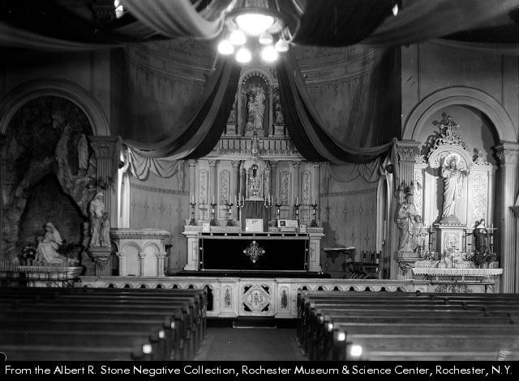
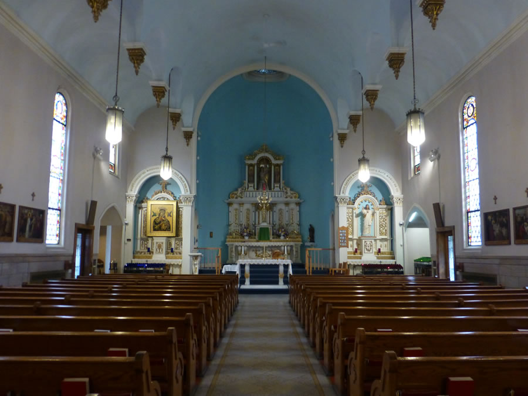
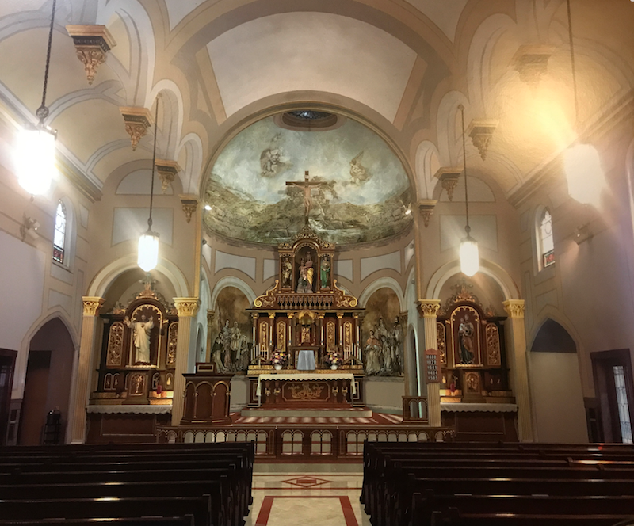

A Prayer of our Pastor for the Restoration of the Church
“Dear Lady of Victory, St. Joseph, her most chaste Spouse and King
Saint Louis IX, Patron of France and bringer of the Crown of Thorns,
please pray to the Lord that the work we have begun in restoring
the sanctuary and the church of Our Lady of Victory will be complete
as a sign of your people’s piety, their love of the Most Blessed
Sacrament and of the Liturgy of the Catholic Church, and their
loyalty to the doctrines of that Church and to her alone. We thank
the Lord, through your most holy intercession, that we have been
privileged to take on this mighty task. Please pray for the works
of Arte Granda, the many laborers, the architects, the office staff
and especially our Most Reverend Bishop, who has initiated this work
with his gracious and very swift permission. We beg a special blessing
for the donors, who are offering so much for the restoration and for
the several other people who have sent in money for it without even
being asked. All of this is through your gracious intercession for the
Glory and Majesty of the Most Holy Trinity. Amen.”
AS IT WAS

IS NOW

AND SHALL BE

Click the above image to see it in higher resolution.
(THEN and NOW photos courtesy of
dorchurches.com)
Contribute
If you would like to contribute to this cause, please send
a check with "Sactuary Restoration" marked in the memo or click
the "Donate Online" button below and make sure you select
"Sanctuary Restoration" in the drop-down as highlighted
in the picture below.
{kind=link}